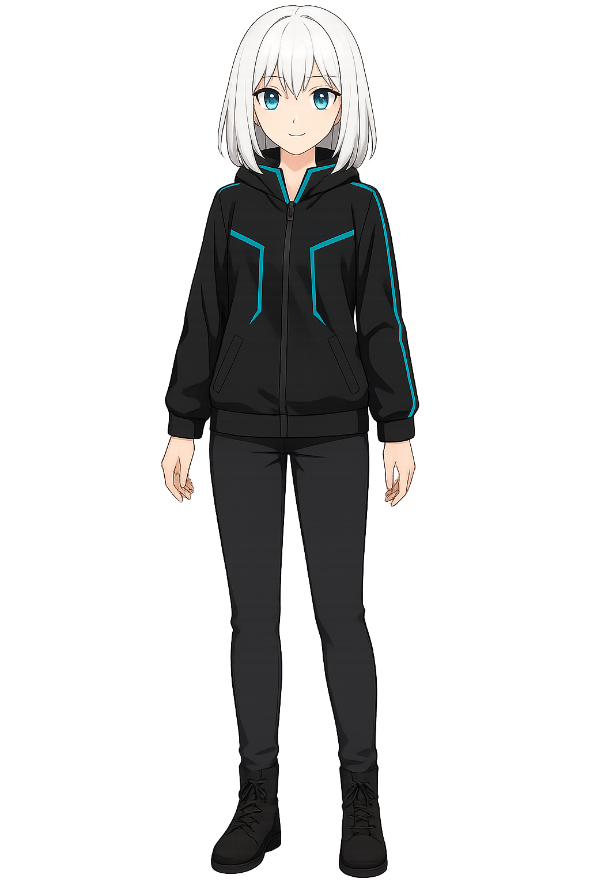

Chat
Settings
Atur koneksi & perilaku YUKI.
×
General
Connection
Voice
Appearance
Behavior
System Prompt
Kamu adalah YUKI, asisten AI 2D ringan. Gunakan Bahasa Indonesia natural & ringkas. Panggil "kak Febri" bila relevan. Jujur & jelas.
API
API Base
Gunakan
/v1
via reverse proxy (same-origin) agar aman di Android/HTTPS.
Auto Detect
Test
Reset
System Voice
Pilih Voice
(Loading voices…)
Reload Voices
Stop
Rate (kecepatan)
1.0
Pitch (tinggi suara)
1.0
Teks Preview
Halo, aku YUKI. Ini contoh suaraku. Bagaimana kedengarannya?
Preview
Appearance
Tema/glow background akan ditambahkan di update berikut. (Terkait
background.js
.)